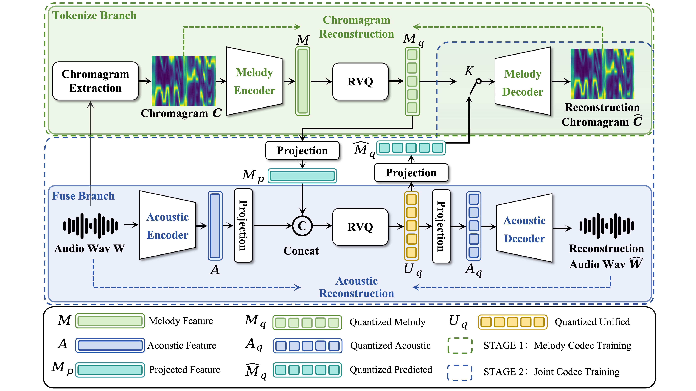

Neural audio codec for singing voice
Harnessing melodic priors for high-fidelity singing voice representation
MeloCodec uses a tokenize-then-fuse strategy: a discrete melodic branch locks in chromagram structure before fusion with acoustic latents, improving pitch stability under tight bandwidth.
1.5 kbps
Low bitrate
1.64
F0-RMSE
0.95
Chroma-Sim
Method overview
Tokenize first, then fuse

Listening samples
Codec reconstruction cases
Melody control
Pitch-control audio cases
Reported evaluation
OpenCpop reconstruction results
| Model | Bitrate | ViSQOL | STOI | F0-RMSE | Chroma-Sim | SPK-SIM |
|---|---|---|---|---|---|---|
| MeloCodec | 6.0 kbps | 4.08 | 0.85 | 0.96 | 0.97 | 0.99 |
| DAC | 6.0 kbps | 3.97 | 0.83 | 1.23 | 0.96 | 0.98 |
| Encodec | 6.0 kbps | 3.92 | 0.82 | 1.92 | 0.93 | 0.97 |
| MeloCodec | 1.5 kbps | 3.38 | 0.78 | 1.64 | 0.95 | 0.94 |
| DAC | 1.5 kbps | 3.05 | 0.71 | 4.12 | 0.84 | 0.91 |
| X-Codec | 1.5 kbps | 2.74 | 0.66 | 4.68 | 0.83 | 0.87 |